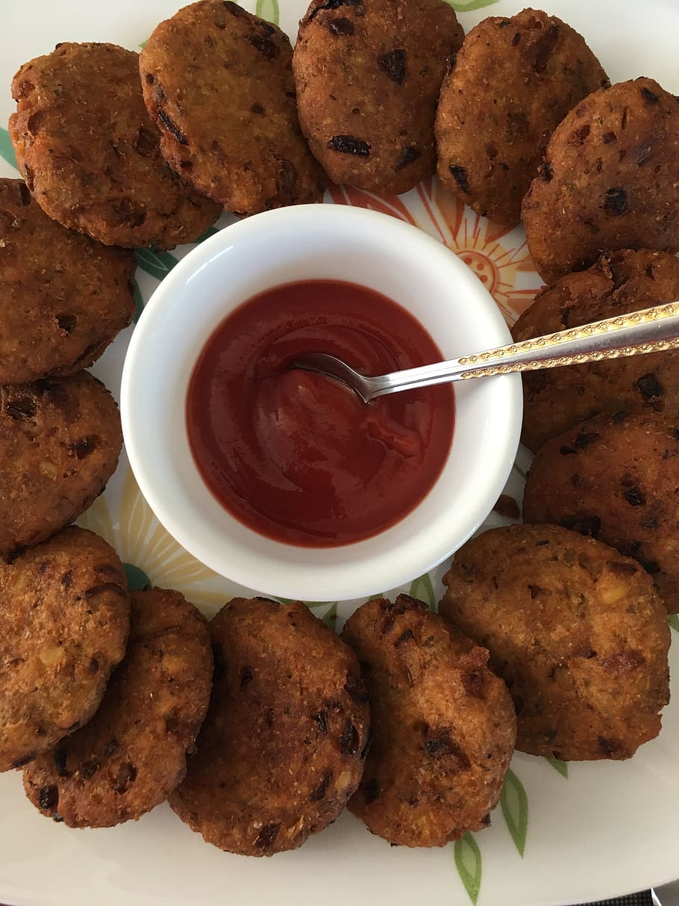

Chicken Tikki
What is Chicken Tikki
Chicken tikki is a chicken dish popularised in the Indian subcontinent during the Mughal era. The dish is popular in India, Bangladesh, Pakistan and the United Kingdom.
Ingredient List For Chicken Tikki Recipe
- Chicken (boneless, skinless)
- Yogurt
- Ginger-garlic paste
- Red chili powder
- Turmeric powder
- Garam masala
- Coriander powder
- Cumin powder
- Lemon juice
- Salt
- Vegetable oil
- Skewers or toothpicks (for grilling)

How to make Pav Bhaji
Marination Of Chicken
1. Start by cutting boneless, skinless chicken into bite-sized pieces and place them in a mixing bowl.
2. In a separate bowl, combine yogurt, ginger-garlic paste, red chili powder, turmeric powder, garam masala, coriander powder, cumin powder, lemon juice, and salt. Mix these ingredients to form a marinade.
3. Pour the marinade over the chicken pieces in the mixing bowl.
4. Use your hands to coat the chicken pieces evenly with the marinade. Make sure each piece is well coated.
5. Cover the bowl with plastic wrap or a lid and refrigerate it for at least 2-4 hours or overnight to marinate the chicken. This allows the flavors to infuse and tenderize the meat.
Cooking Process
6. When you're ready to cook, preheat your grill or oven to medium-high heat (around 400°F or 200°C).
7. Thread the marinated chicken pieces onto skewers or toothpicks, leaving a little space between each piece.
8. Brush the chicken with a bit of vegetable oil to prevent sticking and to help with browning.
9. Grill or bake the chicken skewers for about 15-20 minutes, turning them occasionally, until the chicken is cooked through and has a nice charred exterior. The exact cooking time may vary depending on your cooking method and equipment.
10. Check for doneness by cutting into a piece to ensure it's no longer pink in the center and the juices run clear.
11. Once cooked, remove the Chicken Tikka skewers from the grill or oven.
12. Serve the Chicken Tikka hot, garnished with fresh coriander leaves and accompanied by mint chutney, naan, or rice.
